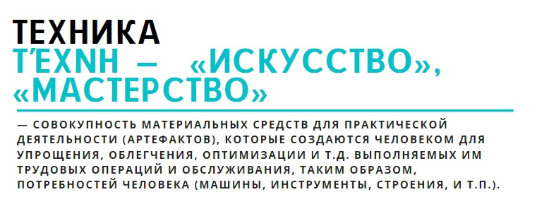
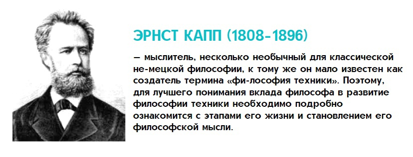
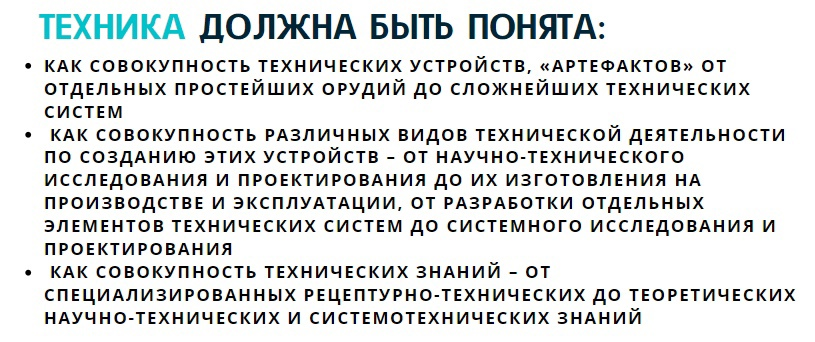
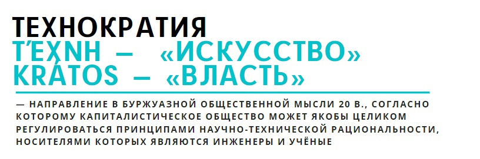
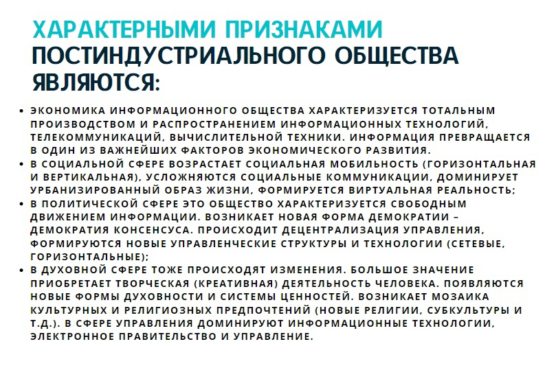
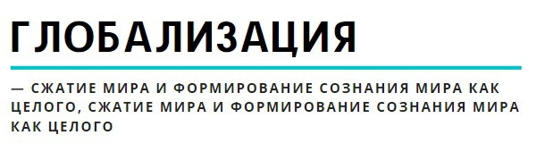

25. Понятие техники и ее роль в развитии человеческой цивилизации. Философия техники и ее проблемы. Технофобия и технократия
Техника – совокупность материальных средств для практической деятельности (артефактов), которые создаются человеком для упрощения, облегчения, оптимизации и т.д. выполняемых им трудовых операций и обслуживания, таким образом, потребностей человека (машины, инструменты, строения, и т.п.). Изобретая и изготовляя технические приспособления, человек целенаправленно в соответствии со своими потребностями и интересами видоизменяет окружающую природу.
Слово техника происходит от греческого Τεγνη (технэ) – искусство, мастерство, умение. Техника – это общее название различных приспособлений, механизмов и устройств, не существующих в природе и изготовляемых человеком. Термин «техника» также означает «способ изготовления чего-либо» – например, техника живописи, техника выращивания картофеля и т.п.
Техника предстаёт как совокупность действий знающего человека, направленных на господство над природой, цель их – придать жизни человека такой облик, который позволил бы ему снять с себя бремя нужды и обрести ей (технике) форму окружающей среды (Ясперс). Примечательно, что мир техники и артефактов становится «второй природой» для человека, фактически полностью замещая собой «первую природу», т.е. естественную среду обитания (лес, река, поле и т.д.. современный человек существует и живет в мегаполисе, где абсолютно все искусственное, даже парк деревьев и газон являются «ненатуральными», т.к. они искусственно спланированы, сконструированы и созданы).
Согласно Э. Каппу (1808–1896), техника не только искусство, но и средство опосредования органов человеческого тела его функциями. Она – воплощение потребностей анатомии и физиологии человека в материале природы (органопроекция). Например, ковш экскаватора это своеобразное продолжение руки человека, микроскоп – продолжение органа зрения и т.д.
В современной неклассической философии техника, следовательно, рассматривается и как искусство (мастерство), умение делать что-либо (а также совокупность приемов и операций, как умение и искусство осуществления трудового процесса) и в связи с созданными человеком предметами труда и быта как система искусственно созданных средств и орудий производства.
Современная техника неизмеримо расширяет социальное пространство свободы человеческих действий. Многие представители Ф. Техники убеждены, что безграничное развитие производительных сил – подлинное благо человечества и условие возрастания его свободы, фундамент счастливого будущего. Для других техника – угроза дегуманизации общества и демон уничтожения цивилизации. Отсюда возникает технофобия – боязнь техники, ее восприятие как нечто потенциально опасное, несущее в себе разрушение и катастрофы, удаляющее человека от его истинной природы. Также под технофобией понимают внутреннее сопротивление, возникающее у людей, когда они думают или говорят о новой технологии; страх или тревога, связанная с использованием технологии; враждебные или агрессивные установки в отношении новой технологии. Отчасти в этом есть смысл, т.к. современный мир демонстрирует высокую степень зависимости и уязвимости от техномира. Так, например, в истории второй половины ХХ века были зафиксированы случаи беспрецедентного хаоса и паники в условиях простых перебоев с подачей электричества (т.н. «блэкаут») в крупных городах мира (например, печально известное отключение электроснабжения Нью-Йорка в ночь с 13 на 14 июля 1977 года, которое в отличие от похожих отключений 1965 и 2003 гг. в этом регионе сопровождалось массовыми грабежами, поджогами и прочими беспорядками). В свою очередь психологи заявляют о новой уязвимости человека – болезненной зависимости от гаджетов и мобильных телефонов, появился даже новый термин – номофобия – зависимость от мобильного телефона, который стал незаменимым атрибутом современного человека. Этот аксессуар настолько прочно вошел в жизнь некоторых из нас, что его неожиданное отсутствие – забыли, потеряли – вызывает у людей едва ли не панику, ведь это устройство ассоциируется с крайне важной информации и личными данными.
Техника является системой действий, посредством которых человек стремится достичь осуществление своей уже внеприродной программы, направленной как бы на независимое развитие самого себя. В этом плане заслуживает внимание концепция трансгуманизма как попытка предсказать будущее человека в условиях постоянно совершенствующегося техномира. Трансгуманизм рассматривает переход человека в техномир как синтез традиционного человека с различного рода устройствами, машинами и превращение в конечном итоге его в кибернетическое устройство (сращивание человека и машины через вживление чипов, протезирование, имплантацию и т.д.). Важный вопрос – после какого момента человека нельзя уже будет считать человеком, в какой момент он должен классифицироваться как машина (см. сюжет кинофильмов «Робокоп», «Робот по имени Чаппи», «Я - робот» и мн. др.)
Любая технология есть совокупность средств и способов деятельности человека в различных сферах жизни общества, она, с этой точки зрения, выражает меру развитости общественной системы и самого человека, который должен понимать и владеть данными технологиями. Актуальный вопрос состоит в том, что для контроля технологий человеку все больше требуются помощники в виде других технологий и устройств, так возникает запрос на «искусственный интеллект» и возрастает опасность потери контроля над развитием техномира, когда человек их творца техники все больше превращается в обслуживающий ее персонал, становится ее заложником, т.к. без техники выжить с помощью предыдущих более ранних видов «примитивных» технологий уже не может. Отсюда популярность в массовой культуре сюжетов, касающихся воспоминания человеком своих более ранних навыков, характерных для предыдущих поколений людей (навыки выживания в естественной среде обитания и добывания пищи, добывания огня, организации своей жизнедеятельности в условиях отсутствия техномира и его источников энергии, навыки самообеспечения и независимости от уязвимостей мира машин), а также популярность темы техногенного апокалипсиса, восстания мира машин.
В силу постоянно возрастающей зависимости человека от техники в ХХ в. появились описания феномена технократии – гипотетического общества, построенного на принципах меритократии (тип общественного управления, когда руководящие посты должны занимать наиболее способные люди), в котором власть принадлежит научно-техническим специалистам, контролирующим наиболее значимы для развития общества технологии. Отдельные черты технократизма проявляются в развитии современного общества, когда, например. общественным сознанием профессиональная принадлежность человека к сообществу программистов, IT-шников воспринимается как признак высокого материального благополучия, успешности карьеры и принадлежности к технической элите специалистов.
26. Научно-технический прогресс и перспективы постиндустриальной цивилизации. Феномен информационного общества
Технологический прогресс 20 века, приведший в развитых странах Запада и Востока к новому качеству жизни, основан на применении научных достижений. Наука не только революционизирует сферу производства, но и оказывает влияние на многие другие сферы человеческой деятельности, начиная регулировать их, перестраивая их средства и методы. Проблемы будущего современной цивилизации не могут обсуждаться вне анализа современных тенденций развития науки и ее перспектив. Хотя в современном обществе существуют и антисциентические (контрнаучные) движения, в целом наука воспринимается как одна из высших ценностей цивилизации и культуры. Выделяют три главных проблемы.
Первая из них – это выживание в условиях непрерывного совершенствования оружия массового поражения.
Второй, пожалуй самой острой проблемой современности становится нарастание экологического кризиса в глобальных масштабах.
Третья проблема – это проблема сохранения человеческой личности человека как биосоциальной структуры в условиях растущих и всесторонних процессов отчуждения (люди не научились ладить друг с другом и с самими собой). Эту глобальную проблему иногда обозначают как современный антропологический кризис.
Современные глобальные кризисы ставят под сомнение тип прогресса, реализованный в предшествующем техногенном развитии. Существуют многочисленные антисциентистские концепции, возлагающие на науку и ее технологические применения ответственность за нарастающие глобальные проблемы. Крайний антисциентизм требует приостановить НТП и вернуться к традиционному обществу, но тогда чем кормить людей. Выход в том чтобы ориентировать НТП на приоритет гуманистических целей.
Концепция постиндустриального общества является частью цивилизационной парадигмы общественного развития и рассматривает развитие общества как поступательный процесс перехода от аграрного общества (основной способ жизнедеятельности – сельское хозяйство и соответствующие технологии с ориентацияей на природные сезоны) к индустриальному обществу (фабричное производство) и от него далее к постиндустриальному обществу (к массовому производству товаров фабричным способом добавляется сфера сервиса, обслуживания, обеспечения услуг и производства информации). Информация превращается в один из важнейших факторов экономического развития (оперативные сводки с торговых площадок, бирж, курсы валют, рост и падение котировок акций, цен на нефть и драгоценные металлы и т.д.). Информация уменьшает неопределенность в выборе правильных моделей поведения и действий. Происходит децентрализации производства (возникают малые и гибкие фирмы, «домашний труд», не выходя из дома перед экраном дисплея, фриланс). Происходит повышение роли индивидуального интеллектуального труда. Классовое деление уступает место профессиональному, сфера услуг преобладает над сферой производства. Согласно А. Тоффлеру (есть и другие теоретики постиндустриального общества – Д. Белл, У. Ростоу), частная собственность на средства производства утрачивает своё былое значение; основной конфликт постиндустриального общества – это конфликт не столько между собственником средств производства и субъектом производства, а между знанием (профессионализмом) и некомпетентностью (непрофессионализмом).
27. Глобализация как предмет социально-философского анализа. Глобальные проблемы современности и возможные пути их преодоления.
Глобализация - сжатие мира и развитие его как взаимосвязанного целого, сжатие мира и формирование общего информационного пространства (Р.Робертсон). По-другому это процесс всемирной экономической, политической, культурной и религиозной интеграции и унификации.
Глобализация является объективным и субъективным процессом (почему субъективным, потому что это не чистый природный процесс, а результат действий человека) социально-природного, технико-экономического, информационно-коммуникативного, политико-духовного, цивилизационно-культурного формирования мира как целого, субъектом которого все больше является уже более-менее единое человечество, а не отдельные народы и нации.
Начало глобализации было положено в конце эпохи Возрождения – в начале эпохи Нового времени серией великих географических открытий (Магеллан, Колумб и др.), когда стали известны все материки. Продолжение глобализация имела в конце Нового – начале Новейшего времени в виде научных открытий и научно-технического прогресса, когда стали доступны новые средства передвижения (ж/д, авто, авиа, морской транспорт) уменьшившие расстояния и время перемещения людей и грузов, а также новые средства связи и обмена информацией (телеграф, телефон, радио, телевидение, в конце ХХ века – интернет, который вообще являет собой беспрецедентное явление – «глобальная сеть», напрямую связано с глобализацией).
Современная философия глобализации включает в себя и онтологию, и гносеологию, и аксиологию, и социальную, и политическую философию, и этическую и другие направления философии глобализации, изучение которых сегодня находится еще в начале.
- предотвращение мировой термоядерной войны, способной уничтожить все человечество;
- создание ненасильственного мира, обеспечивающего мирные условия для социального прогресса всех народов, независимо от уровня их богатства;
- преодоление возрастающего разрыва в уровне экономического и культурного развития между странами, устранение во всем мире экономической отсталости;
- обеспечение дальнейшего экономического развития человечества необходимыми для этого природными ресурсами (продовольствие, производственное сырье, источники энергии);
- преодоление экологического кризиса, порождаемого неразумным вторжением человека в биосферу;
- прекращение стремительного необоснованного роста населения (рост численности населения в развивающихся странах, падение рождаемости в развитых);
- своевременное предвидение и предотвращение различных отрицательных последствий НТР (научно-техническая революция) и рациональное эффективное использование ее уже имеющихся достижений на благо общества и личности (потому что все достижения НТР вначале используются для разрушения, войн и гонки вооружений, пока эту печальную закономерность преодолеть не удалось, например, на 2020 г. бюджет США на военные нужды составляет ок. 700 млрд. долларов – это самый большой военный бюджет из всех стран мира, во много раз превосходящий весь суммарный ВВП для многих отдельных стран)
Все этим проблемы порождены не только колоссально возросшими техническими средствами воздействия общества на природу и огромными масштабами его хозяйственной деятельности (ставшими ныне сравнимыми по масштабу с геологическими и другими планетарными естественными процессами трансформации Земли). Они порождены также стихийностью и неравномерностью общественного развития стран, анархией и культом производства и перепроизводства (избыточного рыночного производства) при капитализме, культом массового потребления (реклама навязывает потреблять все больше и дороже) наследием колониализма (наличие «супербогатых» и «супербедных» стран), погоней транснациональных компаний за прибылью в ущерб долговременным интересам национальных обществ и всего мира.
Еще одной проблемой, возникающей в результате глобализации является проблема упадка малых государств и деградация их национальных культур. Таким малым культурам все труднее функционировать в условиях доминирования единых наднациональных стандартов (например, доминирующие мировые языки общения – английский, китайский, русский и др., доминирующие стандарты мировой культуры, стирающие особенности конкретных стран – например, почти все мегаполисы мира, т.е. самые крупные города во многих отношениях все больше выглядят примерно одинаково; национальные традиции, праздники и обычаи многих малых стран становятся все менее популярными, т.к. население этих стран о них постепенно забывает из-за доминирования глобальной моды и информации).
В настоящее время проявляют себя некоторые попытки найти альтернативы глобализации в связи с ее негативными проявлениями, которые были названы выше. Одна из таких попыток – т.н. движение антиглобализма. Сторонники данного общественного движения, объединяющего разные общественно-политические группы в разных странах видят в глобализации угрозу устойчивого развития не только своих стран. но и всего мира в целом. Антиглобализм напоминает всем, что ценность мира в его разнообразии, а глобализм убивает такое разнообразие, делает мир и страны в нем одинаковым, что всегда будет иметь, прежде всего, негативные последствия.
Как бы там ни было, современный мир демонстрирует, с одной стороны, явные тенденции к объединению (создание больших наднациональных объединений, союзов – НАТО, Европейский союз, ЕВРАЗЭС, Шанхайская организация сотрудничества, Лига арабских государств и др.). С другой стороны, остро проявляют себя тенденции противопоставления стран, культур и цивилизаций по отношению друг к другу (непрекращающееся противоборство сверхдержав на мировой арене – США/РФ, США/Китай, Евросоюз+США/РФ, проблема невозможности полной социокультурной ассимиляции мигрантов (например, в странах Европейского союза) в силу критической разницы менталитетов и традиций и др.).
Отдельно необходимо отметить тенденцию развития глобального информационного пространства (телевидение, интернет), делающего человеческую цивилизацию в коммуникативно-информационном плане единой цивилизацией. Для фиксации возникающего в этой связи эффекта даже был придуман специальный термин – «глобальная деревня», который предполагает быстрый обмен новостями из разных уголков планеты, как это было ранее свойственно традиционным обществам, функционировавших главным образом в виде локальных поседений-деревень.